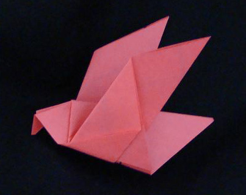
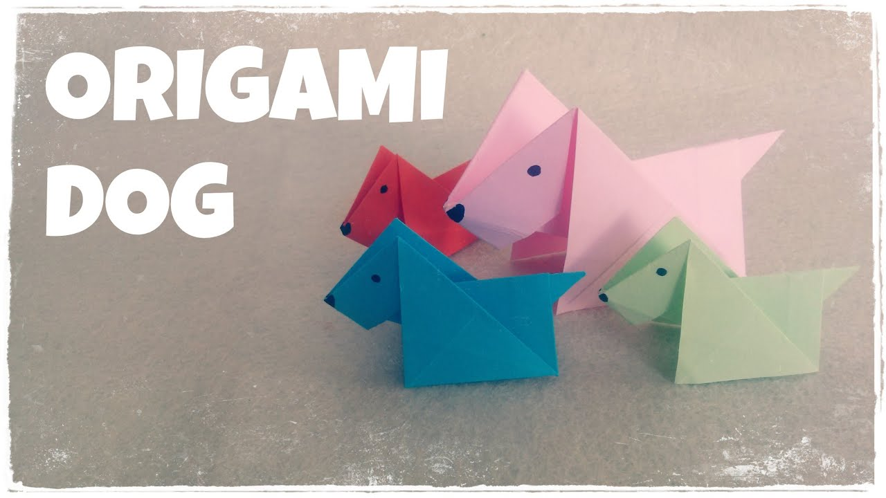

Interesting facts about Origami

Interesting facts about Birds
-
Birds are a group of warm-blooded vertebrates
constituting the class Aves, characterised by feathers,
toothless beaked jaws, the laying of hard-shelled eggs,
a high metabolic rate, a four-chambered heart, and a strong yet lightweight skeleton.

Their sense of smell is at least 40x better than ours.
Interesting Facts about Dogs
Some have such good noses they can sniff out medical problems.
Dogs can sniff at the same time as breathing.
Some dogs are incredible swimmers.
Some are fast and could even beat a cheetah!
Dogs don't sweat like we do.
Your dog could be left or right-pawed.
Intereting facts about Fish
-
Humans have 9,000 tastebuds, but Catfish have over 27,000.
Fish can drown too!
The Spotted Climbing Perch can gulp'
oxygen from the air and walk' on land
using its pectoral fins if it needs to look for water.

Intereting facts about Sunglasses
-
The first sunglasses were created over 2,000 years ago.
Some sunglasses were made for judges.
1929 marked the beginning of sunglasses as we know them.
The Aviator came along in the 1930s.